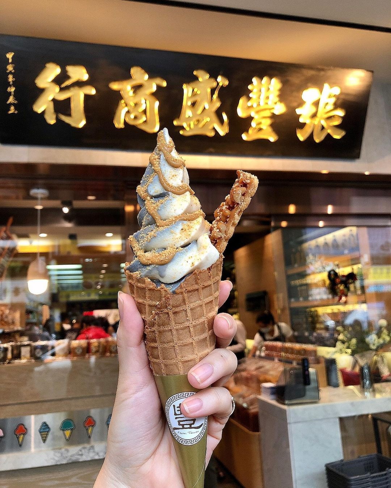

張豐盛商行」是中壢十分有歷史的老店，早年主要經營商品是各類花生製品及進口商品零售。張豐盛商行的招牌商品花生糖不但花生香味濃郁而且不黏牙，還有細分花生糖的顆粒粗細可以選擇喜歡的口感!花生醬、芝麻醬等超適合當伴手禮也是很多網友列為必買的品項。 而最近最紅最夯的當然就是來到張豐盛商行店上大家都人手一支的冰淇淋，八種口味配料可以自選兩種，搭配上別的地方很難吃到的花生醬或芝麻醬，超濃郁超好吃!雖然店家週一到週六8點半開門、週日也9點就開始營業，冰品則是要11點之後才開始賣，要吃霜淇淋的話大家安排行程要注意時間喔！
